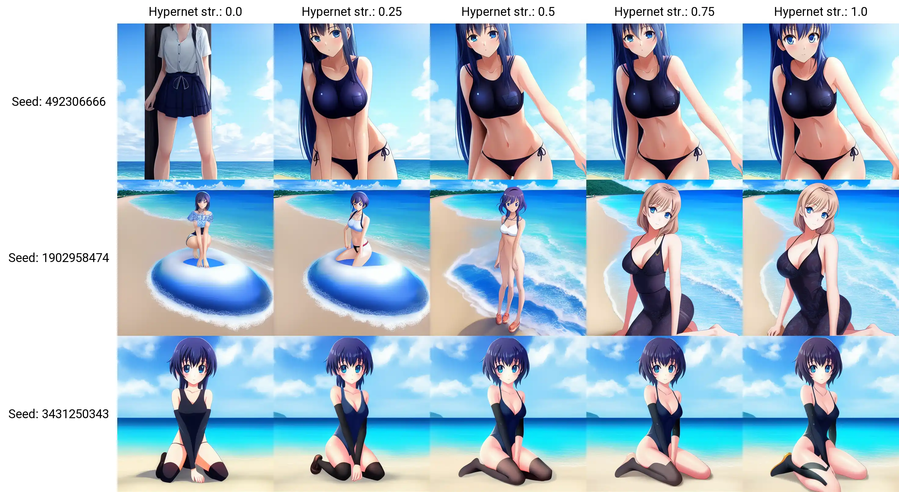

Training machine learning models can be a demanding and time-consuming process, and it often requires a high-powered computer to achieve meaningful results. Here is a simple guide to help you get started with training your own models, along with brief explanations of the various types of models and embeddings that you can currently train.
Each type of model or embedding has its own strengths and limitations, and it's important to choose the one that best fits your needs and goals. Don't be afraid to experiment and try out different options to see what works best for you.
Gathering Data 
To ensure high-quality data for model training, it is essential to collect a diverse range of images that meet certain criteria. These images should be 512x512 pixels in size and should not contain any text. If you're using models that use different dimensions, then you will need to collect images that fit those dimensions. For example, Stable Diffusion now has a 748x748px version. The images should also be free from compression artifacts or blurriness, and ideally only feature a single subject or character. By providing a diverse range of images with a variety of lighting, poses, and expressions, the model will be able to perform well in a wide range of situations.
Below are a few ways I have found for downloading images from the internet in an easy and quick way.
Please note that most images are subject to copyright and the legality of using other peoples intellectual content in AI training is still up for debate. Please make sure you have the necessary rights or permissions to use this content before proceeding. use at your own risk.
Downloading Pintrest Boards - PinDown
One effective method for collecting a large number of high-quality images is to use the Pintrest platform. The Pintrest app allows users to create "boards" where they can save and organize images, and the platform uses machine learning to suggest similar images based on users' interests. However, it is important to note that Pintrest may flag accounts as spam if users pin or like too many images at once. In most cases, the spam block typically lasts less than 24 hours.
I have experienced some issues with PinDown not downloading images at all. This may be due to spam blocking implemented by Pintrest. To resolve this, allow the PinDown extension to be used in incognito tabs and open a new incognito tab. Log into Pintrest and go to your desired board. PinDown should now function properly. You can verify that PinDown is working if it is displaing some images from your board in the PinDown banner.
If you continue to experience problems, try uninstalling and reinstalling the Pindown extension, as this has been known to resolve the issue.
Reddit Scraper - RedHole
RedHole is a relatively easy scraper for Reddit media. If you're looking to download more NSFW images, then Reddit would be a better choice compared to Pintrest. RedHole does require some basic technical knowledge but hopefully my instructions will provide enough information to get you going. This Reddit scraper was found thanks to Reddit user u/Augmentl and was created by Github user Gman0909. Be aware that RedHole will download videos & gifs along with images so you will need to remove them from your downloads once its completed.
To get started, go to the RedHole Github Page where you can download the python script and some basic instructions on how to use it.
Follow the below instructions if you're having trouble following the guide on the Github page.
You can check if you already have pip installed by typing the command
To install pip, you must open your Windows command terminal and enter the following command
Once this is done, you'll see a secret ID and a Client ID which will appear below the name you chose for your app.
In the downloaded RedHole zip folder, once extracted, you'll see a CONFIG.ini file. This is where you'll input the Client ID and Secret ID into the fields of the same name.
Once the script runs you will need to input your Reddit account login details. This is what you use to log into Reddit, not the Client ID and Secret ID you created earlier. Please note when entering your password the cursor will not move but you are still typing.
If you've entered your details correctly, the script will run and start downloading media from your chosen sub-reddits!
Google Image Scraper by rundfunk47
This image scraper was specifically created for collecting images to train Dreambooth models and will automatically crop and resize images to a specified size. You can visit the Reddit post and visit the Github page for more information and to download the code.
I have not personally tested this method yet but it looks to be an easy commandline based method.
Preparing Data
Once you've collected all of the images you want to train with the next steps will be very easy.
The website also allows for previewing and adjusting the crop box for individual images, ensuring that each image is perfectly cropped. However, it can take a significant amount of time to process a large number of images, and the inclusion of invalid file types will cause an error and require restarting the process. It is recommended to use PNG and JPEG/JPG images to avoid such errors.
Once the cropping is complete, the website will download a zip folder containing all the cropped images, ready for training. When extracting the zip file, make sure to do so in an empty folder as the zip file does not contain subfolders. The results may vary, but the website generally does a good job of keeping the face of the subject in frame. While not perfect, it is much faster than manually cropping hundreds of images with different sizes.
Aesthetic Gradients
On 22/10/22, Aesthetic Gradients were added as a new feature for the webGUI. While there isn't much information available on how Aesthetics Gradients impact a model, from what I have gathered, they provide a new way to add style to a model without directly modifying the model and offer greater control over the resulting image. If you're using the webGUI, you will need to add the Aesthetic Embedding separately as it is considered an "extension" which was recently added on 24/10/22 to allow for the modular expansion of the GUI.
Aesthetic Embeddings function as an image prompt for the AI instead of a traditional text prompt. The AI uses the image prompt as a basis for the generated image, providing it with a clearer understanding of what you want the image to look like compared to simply describing it through text.
Aesthetic Embeddings should not be confused with Textual Inversion ones, and therefore require a separate Aesthetic Embedding to be created in the training tab of the webGUI. Additionally, only one aesthetic embedding can be used at a time, while multiple textual inversion embeddings can be utilized simultaneously. However, aesthetic embeddings only require a few images for training in order to greatly influence the AI.
This Youtube video by koiboi does a great job of explaining Aesthetic Embeddings and other basics of Stable Diffusion in a thorough, information way.
Textual Inversion
Textual Inversion is a method used to add new words or phrases to a model by associating them with a collection of images. It is recommended to train words that the model already has some familiarity with. For example, training the model to recognize a new anime character would work well because the model already knows how to draw people, you are simply adding a specific person to the dataset. Textual Inversion is effective for expanding upon what the model already does and adding new objects or characters.
Files used for Textual Inversion are called Embeddings, and have the file extensions
An update by AUTOMATIC1111 on (16/10/22) added the ability to use special images as embeddings. These images can be in formats such as .png and .webp, and display the result of the embedding as the image along with the prompt and data needed for the embedding to work. Simply place the image in the embeddings folder like any other embedding.
Embeddings can greatly impact the output of your images, so it may be helpful to reduce their influence using square brackets or another method. They can also be used as negative prompts, which is a useful technique to prevent certain glitches from occurring.
One advantage of Textual Inversion compared to other training methods is that it requires the least VRAM (8GB minimum) and produces the smallest file size (2-30kb). However, it is also the lowest performing training method, but can still produce usable results.
Keep in mind that embeddings work best with the model they were trained with. If you switch models and try to use the same embedding, the results may not be as cohesive.
I have not personally trained any embeddings, but from what I have seen online, the process can be straightforward and produce good results even with fewer than 20 images used for training.
There is a more detailed explaination on how Texture Inversion works within AUTOMATIC1111 webGUI at the link AUTOMATIC1111 Textual Inversion
If you have created your own embeddings, please feel free to share it with me so I can add a link/ download on this site for others to use.
For my guide on how to use Textual Inversion go to my Embeddings Training page.
Hypernetworks
Hypernetworks, a relatively new concept, have limited documentation available. From what is known, Hypernets inject a chosen prompt into the final stages of a model's processing flow. In simpler terms, the Hypernet prompt is added during the final steps of rendering an image, which influences the output more than if it were introduced at the beginning with other prompts. For example, the prompt would have less influence if used at the start like Textual Inversion does.
To train a Hypernet, a graphics card with at least 8GB of VRAM is required.
Credit goes to Reddit user u/vic8760 for their comments on this topic.
After experimenting with Hypernetworks and Textual Inversion, it appears that Hypernetworks are better at refining pre-existing models to create more visually appealing art. In contrast, Textual Inversion seems to be more effective at inserting unique objects, characters, and concepts into a model due to its modularity. However, I have not been able to train a good embedding yet.
Hypernetworks train faster than embeddings and improve the model significantly if a good dataset is used for training. Ultimately, the success of all training methods depends on the quality and quantity of the data. The main drawback of Hypernetworks is that only one can be applied to a rendering at a time, which is more limiting than using embeddings. Therefore, it is suggested that Hypernets be used for stylistic and refinement purposes, while embeddings should be utilized for specific objects or concepts that the model should generate. I have not yet had the opportunity to try Dreambooth, but it is believed to be the best of both worlds as it can create standalone models.
Below is a test of a small anime Hypernetwork I trained with approximately 1.5k unique images and the strength of the Hypernetwork on the X axis. The effect of the Hypernetwork can be subtle or strong. More testing and training is needed before definitive conclusions can be drawn on the effectiveness of Hypernets.
As always renty.org has a great guide on hypernetworks.
I have found a good Youtube video detailing some of the process for working on Hypernets, although they do not use the AUTOMATIC111 webGUI. HYPERNETWORK: Train Stable Diffusion With Your Own Images For FREE!
Dreambooth
As of 08/11/22, a WebGUI extension has been released that allows users to run Dreambooth on low-VRAM/CPU systems within the WebGUI. This is a significant feature that makes custom model creation accessible to a wider audience. However, training the model on lower-end systems may take longer. A basic overview of model training can be found on the GitHub page. Additional information will be added once I have the opportunity to explore Dreambooth further.
Some users have reported that installing this extension can break the webGUI. I did not experience this issue, but I did have difficulty getting Dreambooth training to work even with CPU processing.
Dreambooth is based on research by Google and is an improvement on textual inversion. With Dreambooth, users can create their own image models (for a specific character/art style) in a fraction of the time (less than an hour) with higher quality compared to using textual inversion. As Dreambooth creates its own models, they are .ckpt files, which can be cumbersome if you want to have multiple variations. Additionally, Dreambooth model files are much larger as they are considered full models. This is where the modularity of Embeddings shines, as it is more user-friendly to train and generate with.
Reddit user u/wuduzodemu has created a Dreambooth GUI that offers an easy installation and training interface. I have not yet tested it, but it appears promising and can also run on 10GB VRAM instead of the usual 24GBs required for local Dreambooth training. This is a major improvement and it is hoped that more accessible options like this will continue to be developed for all users. To download the Dreambooth GUI, visit the GitHub page.
Model Training GUI's
Training machine learning models can be a complex and time-consuming process, and it may not be feasible if you don't have access to a powerful computer. However, there are several options available that can help make the process of training models easier, including graphical user interfaces (GUIs) and specialized programs. Some of these tools are cloud-based, which means that you can use remote servers to train your models, even if your own computer doesn't have the necessary processing power. Here are a few notable programs and services you can use for model training:
Due to the constraints of my own PC, I have not been able to personally test any of the local training methods.
StableTuner
StableTuner is a user-friendly GUI training software that allows you to perform Dreambooth, Fine-tuning, and LORA (TBA) training. This software is focused on training, and it provides all the necessary parameters for you to customize the training of your model using simple sliders and drop-down menus.
In my opinion, StableTuner is currently the best training software available, and it is easy to install with some basic technical knowledge. All required dependencies are automatically downloaded as you begin training. Once you launch the program, it is easy to get started, and all options have tooltips that provide information on their function simply by hovering over them. StableTuner also makes it easy to manage datasets with visual icons and simple methods for adding and deleting dataset concepts, tokens, and class images.
Additionally, StableTuner allows you to convert models between .ckpt files and diffuser models, making it easy to use these models in other software, such as automatic1111's GUI.
If you have the processing power, I would highly recommend using StableTuner to train your next model.
To download the GUI, visit the GitHub page.